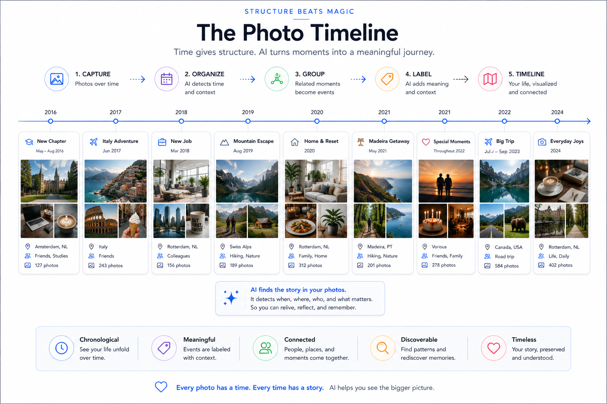
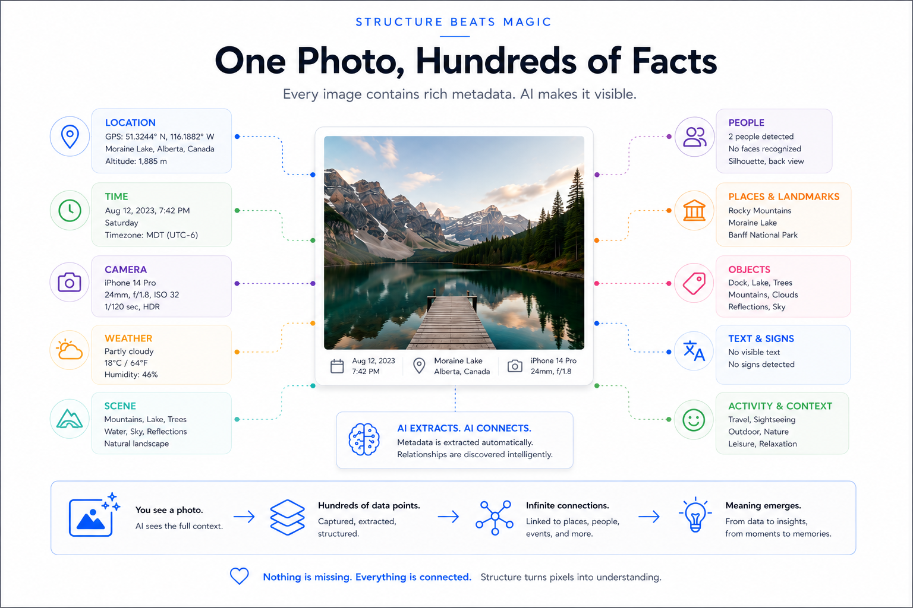
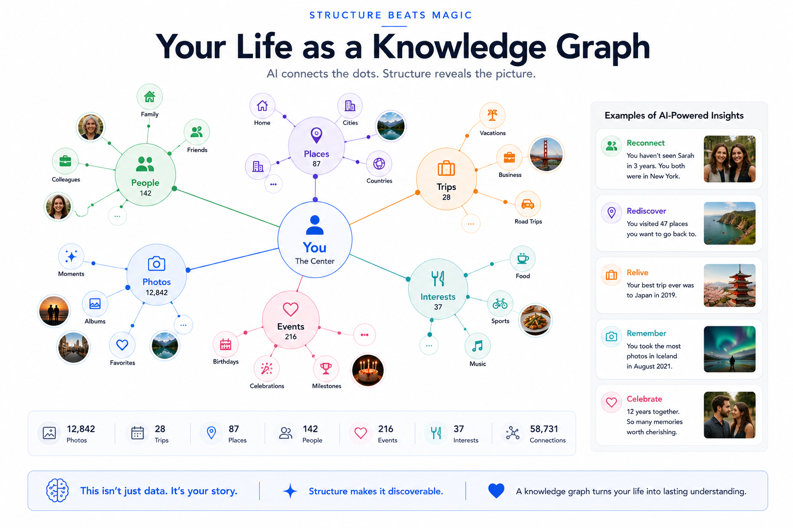

Principles are nothing without the pieces that carry them. These are the building blocks I actually run — the spine that ties them together, the quality layer that keeps them honest, and the foundation that keeps them yours.
Everything below is a piece I actually run. It starts with the spine that ties them all together — the daily note.
One note per day, largely auto-filled from your own data — where you were, what you spent, what you captured, how you slept. Then it rolls up, automatically, from day to week to month to year. A living record you barely have to write.
A spending record is a life record — where you went, what you did, who you saw. One of the richest, most honest signals you own.
Receipts and documents (e.g. via a scan app) quietly reconstruct what actually happened on a day — captured, not remembered.
Your movements over years. With rules, raw coordinates become meaning: at work, at the gym, on a trip — context, automatically.
Steps, sleep, workouts from your phone (Health Connect) — the body's side of the story, folded into the same daily record.
Trip management reimagined — the useful idea behind apps like TripIt, rebuilt on your own data so you own it instead of renting it.
Photos, mail, calendar, highlights — every source a thread; the daily note is where they're woven together.
Document your intentions with AI, and the system can reflect them back against what your data shows actually happened — direction versus reality, gently. Not a scorecard, not pass/fail — a mirror that helps you steer. Your modeled self holds taste and intent.
Underneath every intelligent system is a boring, beautiful thing: a well-structured document vault — plain files, in a deliberate shape, that both you and AI can navigate. Structure isn't bureaucracy; it's what makes the data findable, linkable, and trustworthy.
Time is the universal index. A calendar tree — year → quarter → month → week → day — gives every receipt, note, photo and event one obvious place to live, and a natural path to roll up.
calendar/ └─ 2026/ └─ Q2/ └─ 06 - Jun/ └─ 2026-W26/ └─ 2026-06-29 Mon/ # daily note = index of the day transaction_… scan_… debrief_…
What isn't tied to a date lives in a domain. Each follows the same four-level shape — so you always know where a thing goes.
personal/ # career, health, finances, travel… business/ # the companies family/ # shared ├─ 1-plan/ # thinking ├─ 2-active/ # current ├─ 3-history/ # archived └─ 4-insights/ # analysis

A runbook captures a repeatable procedure — "how I process the inbox", "how I refresh the backups" — so a task is done the same way every time, by you or by an AI following the steps. Knowledge that would otherwise live only in your head.
Big choices get written down — with the options and the reasoning — so future-you (and the system) knows why. Not bureaucracy: a memory of judgement.
Architecture decisions
Personal / life decisions
Investment / purchase decisions
Business decisions
An agreement (a subscription, a contract, a recurring payment) is a promise about the future. Link it to the transactions it should produce, and the system can do something powerful: verify reality against the agreement. Was I charged the agreed amount? Did a cancelled service really stop billing? Is a payment missing? An agreement no one checks is just a hope; an agreement linked to transactions is governance.
Most notes apps give you one bucket: "a note." But a fleeting idea, a decision, a task, and a reflection are different things that deserve different handling. So every capture has a type — and that one label is what makes the pile sortable, queryable, and promotable later. AI (or you) tags it at the moment of capture.
idea_a fleeting idea to develop laterquestion_an open question needing an answerresearch_a deeper investigationdecision_a choice, with options + reasoning (→ IDR/PDR/BDR)action_a concrete task with owner/deadlinebriefing_preparation before an eventdebrief_the outcome/lessons after an eventmeeting-notes_notes from a call or consultmemory_a fact/preference to persist for future AI sessionslearning_new knowledge from a sourcereflection_a personal considerationjournal_free-form diaryscan_a scanned paper documenttransaction_a bank / bookkeeping entrycorrespondence_a formal message in/outitinerary_trip / travel detailWhy bother? Because a typed capture is data, not just text: you can pull "every open question_", "all decision_ records this year", "unresolved action_s" — instantly. The type is a tiny act of structure at capture time that pays off forever after.
Every capture is saved in the day-folder first — because the moment it happened is the one fact you always know. But a task about your car or a decision about a trip also belongs to those subjects. So the capture stays in the day (its home), and a link is added from the relevant domain / subject folder to it. One file, two ways in: by time (the day it happened) and by topic (what it's about).
Over time the best captures get promoted — an idea_ becomes a plan, a decision_ becomes a formal record, a memory_ graduates to the AI's long-term memory. The day-folder is the inbox; the domains are where things mature. Capture fast and dated; organise by linking, not by moving.
"Metadata" sounds like enterprise jargon. It just means the facts about a thing — when a photo was taken, where, by which camera; who a note is about; what a document is for. You don't need a data platform to benefit. The moment your own stuff carries a little structured data, it stops being a pile and becomes searchable, sortable, answerable.

Photos and videos are usually the least organised thing people own — thousands of files, no structure, impossible to search. A DAM fixes that: it catalogues your media with metadata (date, place, tags, people) so the collection becomes queryable, just like the vault. And critically, it links to the brain: a photo's location lines up with a trip in your notes; a scanned document attaches to the day it happened; an image becomes evidence behind a recommendation. The DAM is where your media stops being a separate silo and joins the one connected system — the same metadata discipline, applied to pictures instead of words.
A pile of markdown files becomes a navigable knowledge base in Obsidian — links between notes, a graph of how everything connects, and live views built from the data itself. The same plain files an AI reads, you read as a connected web.
A small block at the top of each file turns prose into data: typed fields the system can filter, sort and validate. This is what makes a note queryable instead of just readable.
--- type: agreement vendor: Hetzner amount_eur: 4.20 cycle: monthly status: active tags: [backup, eu, infra] ---
Instead of hand-maintaining a table, you query the frontmatter — and the view stays current as the notes change. A list of active agreements, this month's transactions, every unresolved action: generated, never stale.
```dataview TABLE vendor, amount_eur, cycle FROM #agreement WHERE status = "active" SORT amount_eur DESC ```
Frontmatter makes notes data; Dataview makes that data visible; the AI layer makes it actionable. Three views of the same structured files — for the eye, for the query, and for the assistant.
Each folder gets an index note named after itself — so a folder is also a page, not just a container.
Live tables & lists queried from frontmatter across the whole vault.
Grid views that query structured notes across every domain — a database feel over plain files.
Consistent structure for recurring note kinds — daily notes, decisions, captures.
The principle behind every plugin choice: it must add structure or visibility, never just decoration. Plain files stay the source of truth; plugins are how you see and steer them.
Every [[wikilink]] between notes is a deliberate connection — this venue relates to that trip, this person to that project. Over time the links matter more than the notes: they encode how things relate, which is exactly the knowledge that usually lives only in your head.
# in a trip note
Dinner at [[Don Camillo]] with [[Annemarie]],
booked via [[Ortigia 2022]] — see [[hotel-quality]].
Obsidian draws those links as a graph — a map of your whole knowledge. The same links are gold for AI: when Claude Code works in the vault, a wikilink tells it exactly which related note to open next. It doesn't have to guess what's relevant — you've already drawn the path. Structured links turn a folder of files into a traversable graph for both human and machine.
A graph is just structure made visible — and structure is what lets an AI navigate your knowledge instead of hallucinating around it. Every link you make is a hint you leave for your future assistant.

The whole system rests on a deceptively simple choice: store everything as markdown. From there, version it like code, and reach it from every device through one AI layer.
Every document — notes, decisions, agreements, briefings — is plain markdown. Human-readable, future-proof, owned by you, and perfectly legible to AI. No proprietary format, no lock-in, no app that can hold your words hostage. Plain text outlives every tool.
Because it's plain text, the vault can be versioned with git — every edit a tracked change you can diff, review or roll back. But a personal vault is not public code: it holds deeply private data, so where the repo lives matters. A plain git remote isn't encrypted — keep it private/self-hosted, or skip a remote entirely and rely on the encrypted backup instead. Versioning and protection are two different jobs.
My day-to-day cockpit: an AI agent working inside the files in VS Code — reading the vault, following links, editing notes, running the pipelines. Not a chat beside your work; an assistant within it.
This is the whole bet. Because everything is plain markdown, no single AI tool owns your system. Models change monthly; today's best is next year's also-ran. When your data is structured and portable, you simply point a different — or better — tool at the same files. You can even run several in parallel, each on what it does best, against one source of truth. Own the structure; rent the intelligence.
Foundation = yours · AI tools = swappableMy primary — agentic work inside the vault & repos. Reads files, runs pipelines, edits in place.
Strong for image generation and quick second opinions.
AI-native editor — another lens on the same files when it fits.
Fast, sourced research and fact-finding on the open web.
Different strengths, one foundation. The point isn't loyalty to a tool — it's that the structured markdown underneath lets you use the right one for each job, today and whatever comes next.
The core lives on a master machine, but you're not chained to a desk. Capture from your phone; think and plan in Claude Desktop, Cowork and Projects; run the heavy work through Claude Code. The pattern is connect and dispatch: a quick idea or instruction from anywhere is routed to where the real processing happens, against the same single source of truth.
Capture anywhere, dispatch to where the power is, commit back to the one vault. The devices are just doors — the structured, versioned markdown behind them is the thing that's actually yours.
AI generates; it also gets things wrong. The difference between a toy and a system is that a system validates its own output — continuously — and keeps improving. This is the discipline most "AI productivity" never mentions.
Drafts, enrichments, classifications, recommendations — fast and at scale.
Plausibility checks: was I really there then? Do I know this vendor? Is this date possible? Cross-check every datapoint against what's already true.
On a mismatch, the system flags it for review instead of confidently inventing — catching OCR errors, mis-dated scans, misclassifications.
Review the auto-generated results, fix what's wrong, and improve the rules themselves. The system gets more trustworthy over time.
It's a double loop: rules check the output, and the checks themselves get reviewed and improved. Borrowed straight from data-quality engineering — and the reason the output stays reliable as the system grows. You must check the auto-generated results. Continuously.
This is the part the hype skips. An assistant that knows you doesn't arrive ready-made; you train it. That means feeding it a lot of input — your context, your preferences, your history — so there's enough data and enough rules to reason over. It means correcting the AI when it gets things wrong, and then doing the crucial bit: capturing that correction as an improved rule or skill, so the same mistake doesn't return. Over time the system gets sharper — but only because you kept investing. There's no version of this where you put in nothing and get an assistant that truly knows you. Discipline is the price; compounding capability is the payoff.
Training the system takes a lot of input — so the friction of getting it in matters enormously. Typing is the slow path. The trick is to capture by the fastest means available and let the structure absorb it.
Most thinking is faster spoken than typed. Dictate a reflection, a draft, a correction — on the phone, on a walk, on a watch — and let it land as text in the vault. The single biggest reduction in input friction.
Beyond standard tools like Wispr Flow, I run my own transcription in the vault: local speech-to-text (faster-whisper) that turns voice memos into markdown on my own machine — private, no per-seat cost, and wired straight into the daily note. The capture tool is itself a building block I control.
Voice, quick text, photos, even email-to-agent — whatever's nearest in the moment. All of it flows through the controlled inbound into the same structured core, so capturing is effortless and filing is automatic.
Freedom at the input, discipline in the structure. The easier it is to feed the system, the more it knows — and the smarter the assistant gets.
The hardest things to get from AI — sounding like you, avoiding your pet hates, not repeating yesterday's mistake — aren't prompting tricks. They're files. Once captured, they apply every time, automatically.
Feed it real samples of how you actually write, distil them into voice rules, and bake that into a triggerable skill. Your voice stops being something you re-explain and becomes reusable structure.
The negative space of voice: banned words, clichés, the "this isn't X, it's Y" tics that scream AI. Telling the system what to avoid removes the tell more reliably than telling it what to do — the same anti-interest principle, applied to writing.
Every time you correct the AI, write it to a mistakes file the system reads at the start of each session. That's the enforcement behind "capture corrections as rules" — the mechanism that makes the system compound instead of repeating the same error tomorrow.
Voice, anti-style, mistakes — three files that turn the most human, hardest-to-pin-down parts of working with AI into durable structure. Write it once; it applies forever.
Not a roadmap — what's running today. Dozens of small, connected applications on one foundation, each turning a source into something useful.
Auto-fills each day from 20+ data sources.
Day → week → month → quarter → year, generated.
EXIF + sidecars → geo-indexed, tagged library.
Timeline → "at work / at the gym / on a trip" via rules.
Transactions structured, classified, validated.
Steps, sleep, workouts from the phone, folded in.
Receipts/docs OCR'd and filed to the right day.
Trips derived from your own data — beyond TripIt.
People & interactions as structured context.
Readwise → a queryable idea corpus.
Taste-scored venues, first-party photos, a live site.
Recommends from taste + films seen.
Checked tasks synced out to calendar.
Vault → sites & documents, portable.
Every block here is chosen to be independent — not locked to a big-tech vendor who changes the API, the price, or the rules without asking. The deliberate direction: step by step, reduce dependence on Google Drive, Google Photos and OneDrive, and move to building blocks you control. Convenience today isn't worth losing your own data tomorrow.
Independent building blocks > vendor lock-inThe same class of technology that powers large data platforms now runs on a laptop — for almost nothing. This is what makes governed, powerful systems possible beyond the enterprise.
A complete analytical database in a single file. Query gigabytes of your own data — photos, books, mail, finances — instantly, locally, free.
The same engine, scaled to the cloud and shared — so a personal system can grow into a team one without changing how it's built.
An open table format that brings warehouse-grade structure (versioning, large data) without warehouse-grade complexity or cost.
Describe a pipeline in plain language and let AI assemble it — ingest, sync, alert — no plumbing code. Structure + AI + rules, made practical.
The point isn't the tools — it's that the gap between "enterprise data platform" and "what one person can run" has collapsed. Structure is now affordable for everyone willing to build it.
You already use the right tools — calendar, drive, CRM, photo and book libraries. The leverage comes from making them talk: each is a source or a surface feeding one connected brain, instead of a silo.
A calendar entry, a photo's location, a CRM contact and a book highlight stop being four separate apps — and become one fact the system can reason over.
A private system still has to meet the world. The trick is a clean, deliberate boundary — a controlled inbound for what comes in, and a publication layer for what goes out — so your private core stays private and only what you choose is shared.
Everything enters through a known landing zone, not straight into the core:
A separate, generated layer for what leaves the core — read-only, portable, opt-in:
Two people on the same trip don't need to merge their whole lives — just the slice that's shared. The publication layer makes that natural: export exactly the trip, the itinerary, the photos you both want — to a travel companion, a partner, a family member — while the rest of each person's system stays entirely their own. Selective sharing, not a shared account.
Not all inputs are equal. A Curated Source is a person, publication or collection you've deliberately judged worth trusting — scored for relevance and quality — and fed to the system as a filter. The opposite of drinking from the firehose: a chosen, structured layer of inputs the AI can lean on.
What you read, your favourite authors and publishers — your taste, made explicit.
Writers, critics, experts — scored by how much their judgement is worth to you.
Scan the contents of your travel books; the destinations and authors become curated input.
Share the travel bloggers you rate — their picks feed the curation engine.
Because you chose them, they're a signal of your taste — exactly what an AI needs to recommend like you would. Curated Sources turn "what I trust" into structured input. Generic AI averages the internet; this points it at the few sources that actually match you.
An architectural idea that falls out naturally once structure is clean: separate the data from the preferences, rules and history. The vault engine stays the same; the persona loaded on top is swappable.
Copy the vault, load a different persona — different interests, history, anti-preferences — and the same machine reasons as a different person. You can build the architecture once and serve many people, import sensible starter rule-sets for a life-stage, or simply see the world through another lens. The cleanest proof that data and judgement are separate things. (A direction I'm designing — vision, not yet built.)
A powerful personal system is worthless if you don't own and protect what's in it. Sovereignty, privacy, and backup aren't an afterthought — they're the foundation everything else sits on. The governance discipline, applied to your own life.
Where data lives is a legal decision, not just a technical one. I keep mine with a long-established German provider, under EU jurisdiction and GDPR — not on US infrastructure by default.
🇪🇺 EU-hostedMatch the lock to the value. Sensitive data is client-side encrypted before it ever leaves the machine; low-sensitivity bulk goes encrypted-at-rest. Encrypt deliberately, not blindly.
Versioned, deduplicated, client-side-encrypted backups to EU object storage — so a lost laptop is an inconvenience, never a catastrophe.
Cloud isn't enough. An encrypted physical copy on spare SSDs, kept with you, means you're never one outage — or one account lockout — away from your own data.
Phone and laptop stay in sync directly, device-to-device, without handing the data to a cloud you don't control. Captured on the go, present everywhere.
The point of every block above: you — not a vendor — own the data, the encryption keys, and the ability to keep it that way. That's sovereignty.
Each is a building block. Stack them and you get something rare: a powerful, AI-ready personal system you actually own — private, portable, and resilient by design.
The same structure-first approach turns each area of life from a pile of stuff into a system that knows your taste — and your favourites.
Trips reconstructed from photo GPS; recommendations filtered to your taste, not the tourist trail.
Favourites that fit you155,000 images turned into a searchable, geo-indexed map of where you've been.
Your whole life, queryableTransactions structured and validated — spending you can actually see and reason about.
Clarity, not spreadsheetsAI that recommends films from your taste and what you've already seen — not generic "popular now".
Worth your eveningAcross every area — your interests and anti-interests captured, so the system always knows what's truly you.
A modeled taste